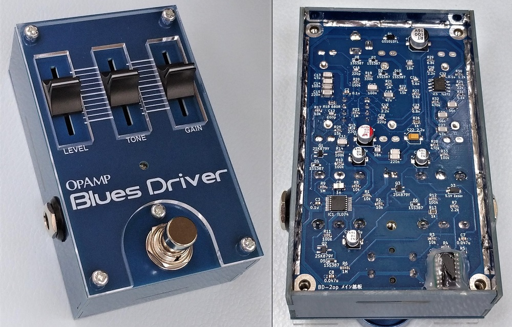
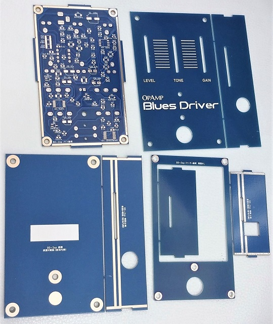
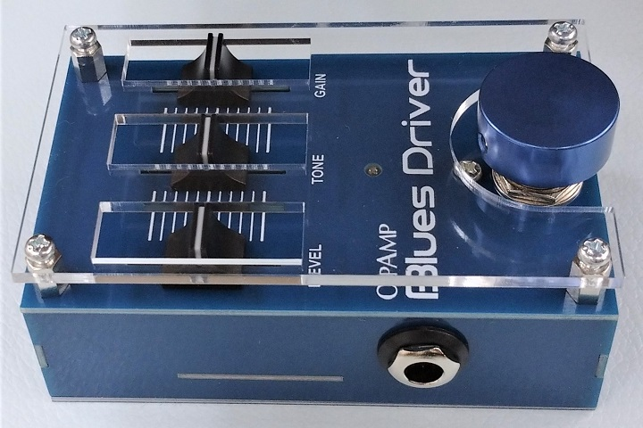
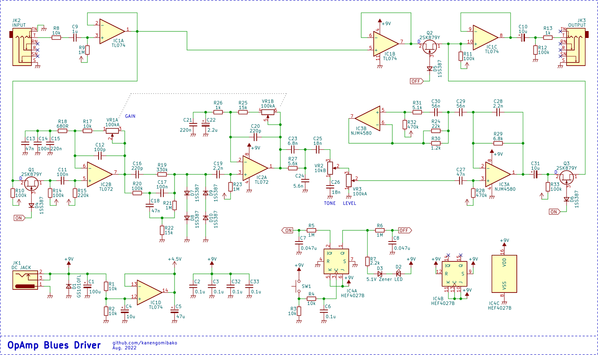
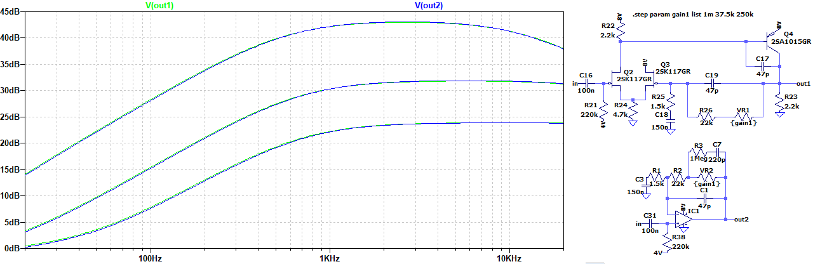
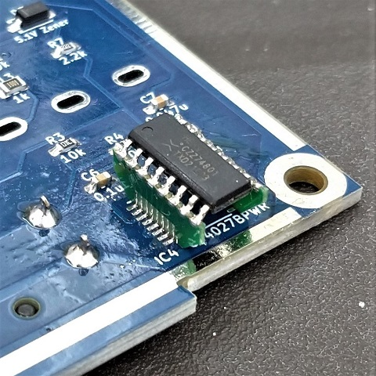
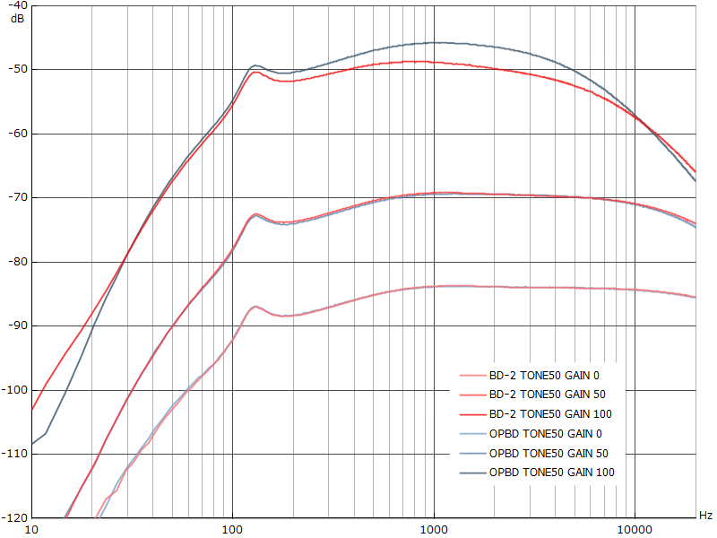
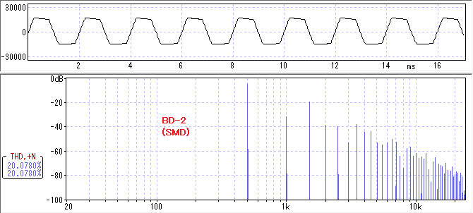
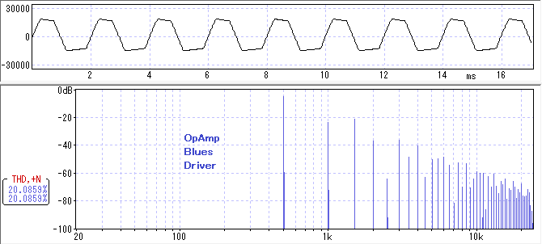

OpAmp Blues Driver
2022年10月18日 カテゴリー：自作エフェクター（アナログ）

数年前、BOSS BD-2をオペアンプのみで構成してみようとシミュレーションしていたことがありました。そのときはうまくいかず断念しましたが、BD-2の解析をきっかけに再挑戦し完成までこぎつけることができました。今回も以前製作したRATのようにスライドボリュームを使っています。

基本的にはSansAmp Bass Driver DI V1E Liteと同じで、六角スペーサーを支柱として使うという構造です。今回はバッファードバイパスなので、アクチュエータースイッチのバネで基板上のタクトスイッチを押すようになっています。

フットスイッチキャップが必要になりますが、アクリル板を高く取り付けるとスライドボリュームのノブを保護することができます。ノブはAliExpressで購入したもので、いろいろなスライドボリュームに適合するよう穴の形状が工夫されているタイプです。
▽回路図（KiCadデータはGitHubへ）

BD-2はGAINが250kAの2連ボリュームですが、適当なスライドボリュームが見つからず、共立エレショップにある100kAのものを使うことにしました。それに伴い周辺の値を細かく調整しています。2段目の増幅ではオペアンプでの歪みが入るので、IC変更の可能性を考えてソケットにしておきました。

BD-2の差動増幅回路をそのままオペアンプに置き換えると、ゲインが高いところで周波数特性がズレてきます。上図のように、可変抵抗と並列に抵抗とコンデンサを入れるとほぼ一致させることができました。ただ現実的には可変抵抗の誤差やJFETの個体差があるため、厳密に一致させる必要はないと考え採用していません。
IC3B周辺はシミュレーテッドインダクタ（ジャイレータ）ですが、TL072を使うと発振しました。同様の例が報告されているのを見つけましたが、はっきりとした原因はわかりません（容量負荷が関係しているのだと思いますが…）。TL072はよくバッファとして使われていますし、万能なイメージがあったので驚きました。コストパフォーマンスが高いからといって漫然と使ってはいけないとわかりました。
フリップフロップ回路はDS-1やTS9の時と同様4027というロジックICを使ったものです。最初はパッケージが小さいCD4027BPWRを付けていましたが、なぜかモーメンタリ動作（スイッチを押している間だけエフェクトオフ）となりました。以前と同じHEF4027Bを使う必要があるようです。CD4027BとHEF4027Bはデータシートのロジック図が微妙に違うのですが、深く追求はしていません。

SOP16→TSSOP16の変換基板のようなものを発注して取り付けました。さすがに弱々しいので、後からホットボンドで固定しています。
▽周波数特性（TONE 50%）

本家BD-2（SMDバージョン）との比較です。ゲイン最大の時はそれなりにズレがありますが、想定通りです。
▽波形・倍音（TONE 100% 歪率20%）


オペアンプでの歪みは、基準電圧のプラス側とマイナス側でクリップされる電圧が違うため非対称なクリップになり、偶数次倍音が多く出る傾向があります。ただ、聴感上はあまり差はないように感じました。歪率や周波数特性が同じだと、かなり近いニュアンスの歪み方になるのではないかと思います。